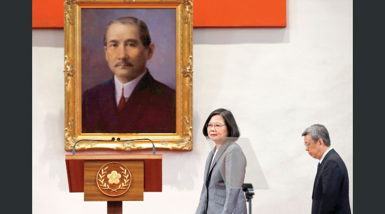

NOTICIAS INTERNACIONALES
EUA advierte en Honduras que relación con China puede "decepcionar"
Encargada de negocios de la embajada estadunidense en Tegucigalpa sugiere evaluar cuáles países son sus verdaderos aliados.
Estados Unidos dijo que los "países que buscan establecer o ampliar relaciones con China podrían decepcionarse a largo plazo", y pidió al pueblo de Honduras que "evalúe quién ha sido un socio cercano y constante" en la construcción del desarrollo. Así lo manifestó el viernes la encargada de negocios de la embajada de Estados Unidos en Honduras, Heide Fulton, en un mensaje en Twitter. "Países que buscan establecer o ampliar relaciones con China podrían decepcionarse a largo plazo", añadió la diplomática estadounidense. Destacó que "es importante que el pueblo hondureño evalúe quién ha sido, y continuará siendo, un socio cercano y constante en la búsqueda de un mejor futuro para este país con fuerte potencial". Mientras tanto, ayer Nicaragua confirmó sus relaciones con Taiwán, en un encuentro privado sostenido entre el presidente Daniel Ortega y el director del Departamento de América Latina y el Caribe del Ministerio de Relaciones Exteriores del país asiático, Alexander Tah-Ray Yui. "Lo estamos saludando y, como siempre, manifestando nuestro reconocimiento al pueblo, a la presidenta de Taiwán, a la presidenta Tsai Ing-wen", dijo Ortega al funcionario taiwanés. La confirmación de Ortega llega cuatro días después de que el Gobierno de El Salvador anunció el fin de sus relaciones diplomáticas con Taiwán para empezarlas con China, tal como lo hicieron antes Panamá y República Dominicana. Cabe destacar que el presidente Salvador Sánchez Cerén recibió el 13 de julio al ministro de Relaciones Exteriores taiwanés, Joseph Wu, "con quien acordó acciones para fortalecer los lazos entre El Salvador y la República de China (Taiwán)", según el comunicado distribuido por la Casa Presidencial. Seis semanas después, rompió esos lazos diplomáticos. Ortega atraviesa el momento más complicado de sus últimos 11 años como gobernante de Nicaragua debido a una crisis sociopolítica en la que los organismos humanitarios lo señalan como responsable de entre 322 y 448 muertos debido a la represión, de los que su Gobierno reconoce 198. Tanto la Organización de Estados Americanos (OEA) como diferentes sectores de la sociedad de Nicaragua han recomendado a Ortega adelantar para marzo de 2019 las elecciones de 2021 para acabar con la crisis de forma pacífica, sin éxito. "Vengo como enviado de mi presidenta Tsai Ing-wen para ofrecerle nuestro saludo y aprecio, y contentos de ver que la sociedad en Nicaragua está volviendo a la normalidad", dijo el representante de Taiwán.